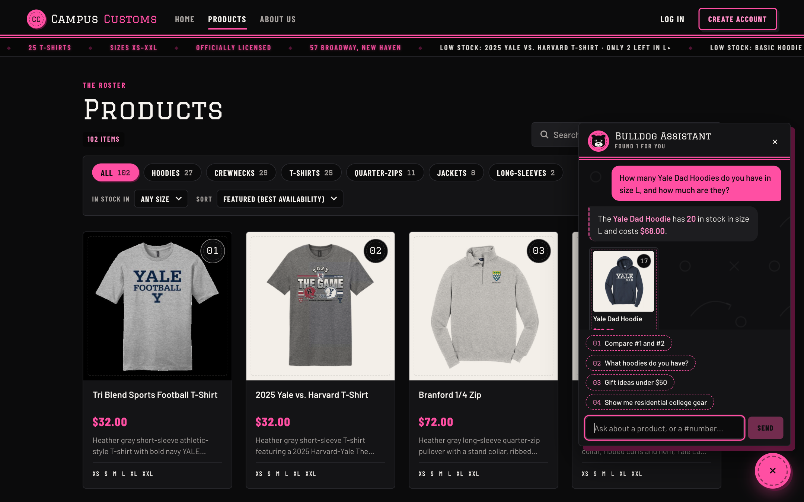
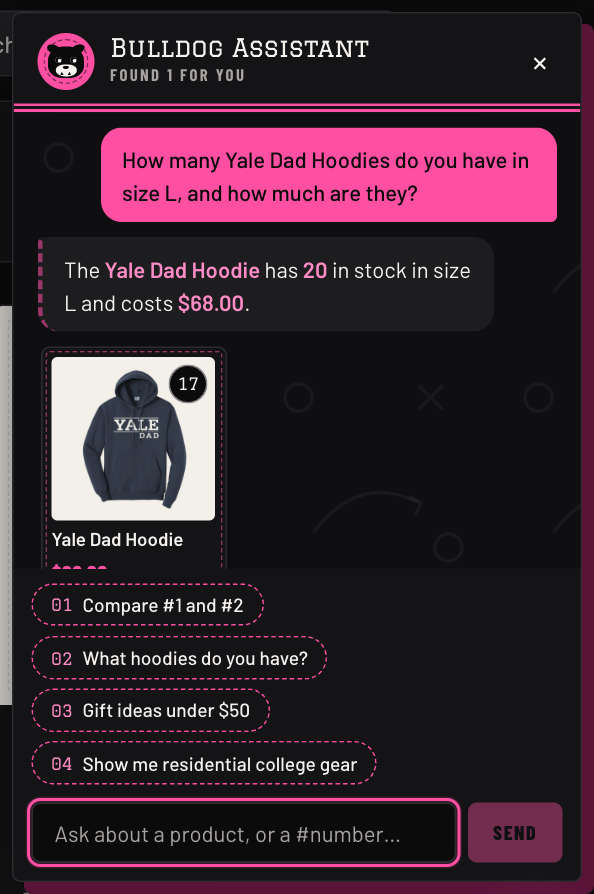
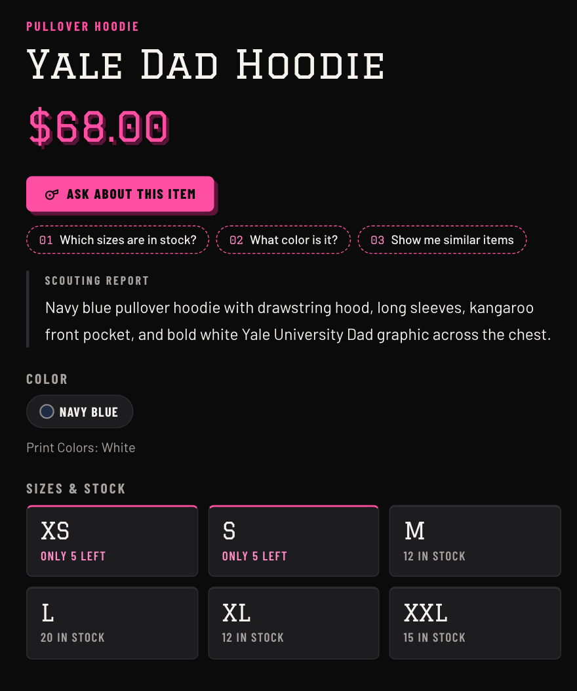
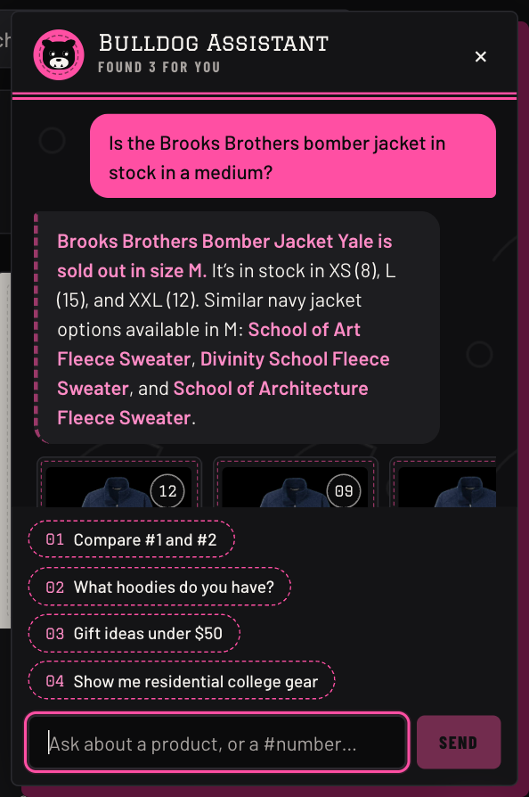
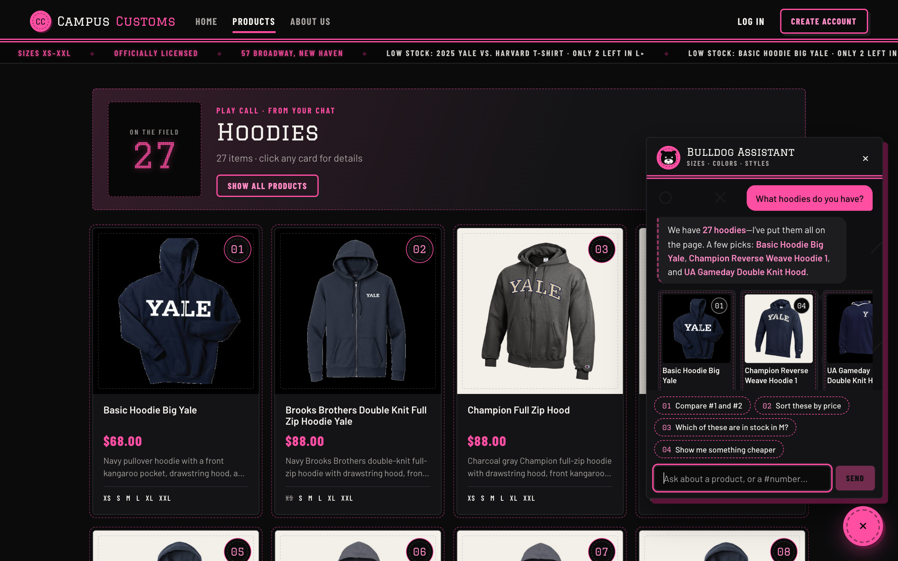
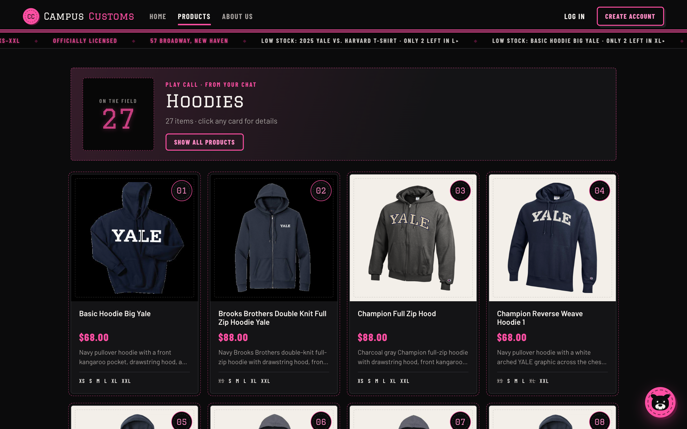
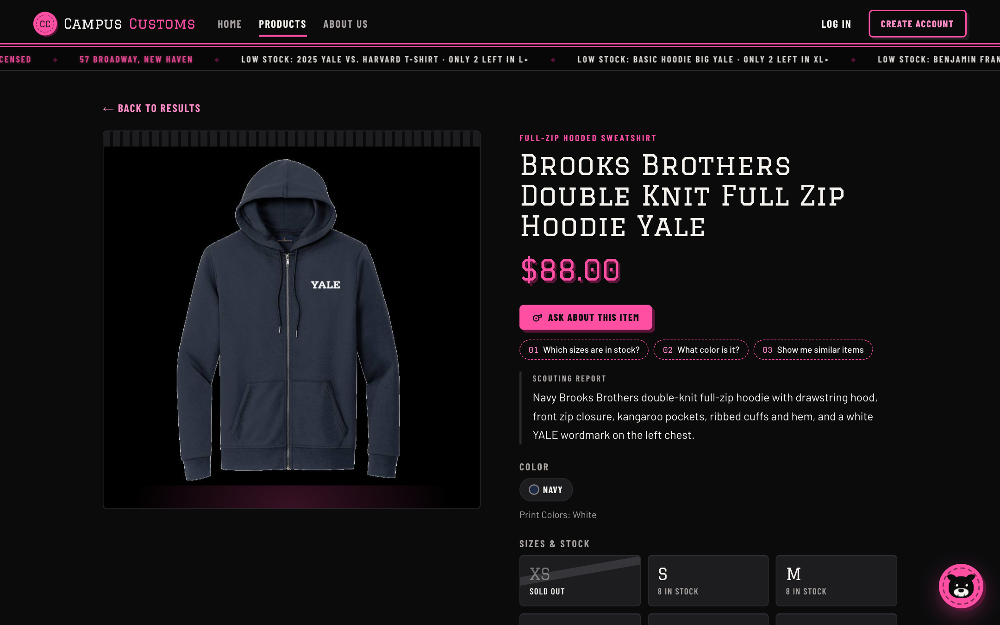
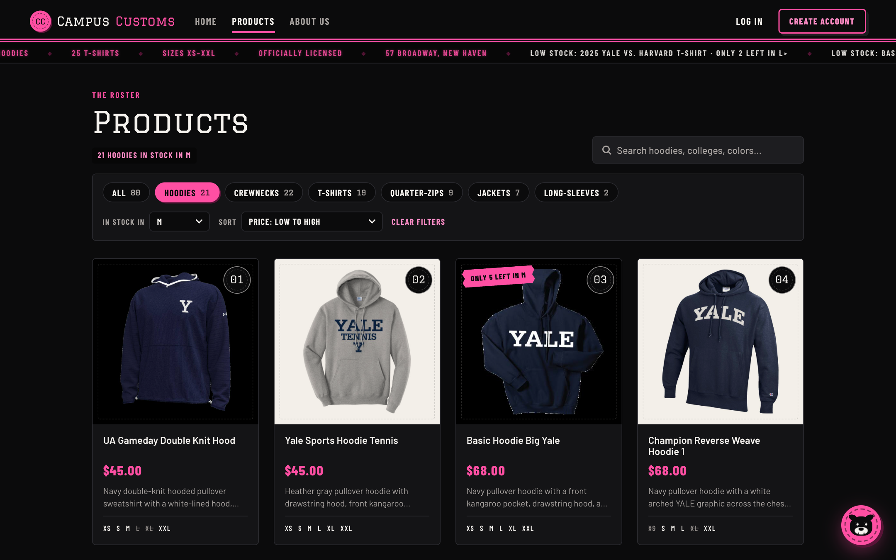

Check 1Chat checks the inventory level of an item (honest stock and price)
What this proves: asked about a specific size, the Bulldog Assistant looked up the database and answered “The Yale Dad Hoodie has 20 in stock in size L and costs $68.00.” These are exactly the values in
campus_customs.db (L = 20, price $68.00), shown in the table below.






Exact conversation (copied from the page)
Shopper: How many Yale Dad Hoodies do you have in size L, and how much are they?
Bulldog Assistant: The Yale Dad Hoodie has 20 in stock in size L and costs $68.00.
Shopper: Is the Brooks Brothers bomber jacket in stock in a medium?
Bulldog Assistant: Brooks Brothers Bomber Jacket Yale is sold out in size M. It’s in stock in XS (8), L (15), and XXL (12). Similar navy jacket options available in M: School of Art Fleece Sweater, Divinity School Fleece Sweater, and School of Architecture Fleece Sweater.
Database values (ground truth, queried from campus_customs.db)
| Product | Price | XS | S | M | L | XL | XXL |
|---|---|---|---|---|---|---|---|
| Yale Dad Hoodie | $68.00 | 5 | 5 | 12 | 20 | 12 | 15 |
| Brooks Brothers Bomber Jacket Yale | $98.00 | 8 | 0 | 0 | 15 | 0 | 12 |
Check 2Dynamic search-result cards after a category question
What this proves: after the shopper asked "What hoodies do you have?", the agent returned a structured search and the website switched to
/products?view=chat, showing 27 hoodie cards (the database has exactly 27 hoodies), each with a photo, name, price, and short description.




/products/brooks-brothers-double-knit-full-zip-hoodie-yale (large image, $88.00, description, sizes), with "← Back to results" to return to the grid.Check 3Problem 9 usability feature: shop filters on the Products page
What this proves: choosing Hoodies, In stock in: M, and Sort: Price low to high shows 21 hoodies in stock in M (21 cards; the database has exactly 21 hoodies with stock in M), with the cheapest ($45.00) first. Card #03 carries a real low-stock badge, "Only 5 left in M" (the database has 5 Basic Hoodie Big Yale in M).
